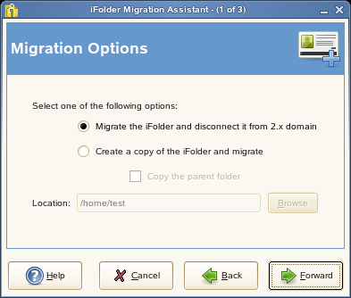

2.2 Migrating from iFolder 2.1x to iFolder 3.6
Novell iFolder 3.6 provides a simple, hassle-free migration from iFolder 2.1x to the iFolder client for Novell iFolder 3.6. The Migration Wizard provided in the iFolder 3.6 client helps you migrate the existing iFolder 2.x data to iFolder 3.6 quickly and easily.
iFolder 3.6 detect the 2.x installation during startup and prompts you to migrate your data. During the data migration, it will prompts again to convert existing folders or to make a copy of the 2.x iFolder.
iFolder also prompts you about the resynchronization of the files to 3.6 server, and asks whether you need to retain the 2.x client until the 3.6 completes synchronization.
-
Install the iFolder client for iFolder 3.6, then set up your account for the iFolder 3.6 enterprise server.
For information, see Managing iFolder Accounts and Preferences.
-
In the iFolder browser, create one or more iFolders on your local computer.
You can use any valid name for an iFolder. Do not create an iFolder in the same directory path as your current iFolder 2.1x directory. For information, see Section 4.5, Creating and Uploading an iFolder.
The iFolder displays a message about the existence of previous version data, and request for a migration.
-
Click to appear the Migration Wizard.
You can also reach the Migration wizard by

-
Click to open a list of exisistng 2.x iFolders.

-
Select the 2.x folder you want to migrate from the list.
Click to view the properties of the selected 2.x folder
-
Clickto display the Migration options.
 -
Select one of the following:
: Select this option to disconnect the existing folder from the iFolder 2.x domain after migrating it to 3.x.
Select this option to create a copy of the iFolder2.x files and connect it to the iFolder 3.6 server. This does not remove the files from the ifolder 2.x domain even after you migrate the files to iFolder 3.6.
If you select this option, you can also select if you want to copy not only the contents of the 2.x folder, but the parent folder as well. If you leave this option unselected, only the contents of the selected folder will be migrated to 3.x.
-
Click to find the location to save the migrated folder.
-
Click to select the Server Address and Security Optionsfollowing:
IMPORTANT:You cannot modify or undo the security settings, after you set them.
-
Select the server from the drop-down list
-
Select the desired security options:
- Select to
encrypt the selected iFolder
If you did not set your passphrase during login, iFolder prompts you to enter the passphrase. You can skip this option and set the passphrase later.
- Select to share the iFolder
with other members in the iFolder 3.6 domain.
IMPORTANT:You can not share your encrypted iFolders and vice versa.
- Select to
encrypt the selected iFolder
-
-
Click to verify and migrate the selected folder.

-
Verify that the information you have entered is correct, if necessary, click to return to previous pages to make corrections. If the given information is correct,
Click to begin the migration process.